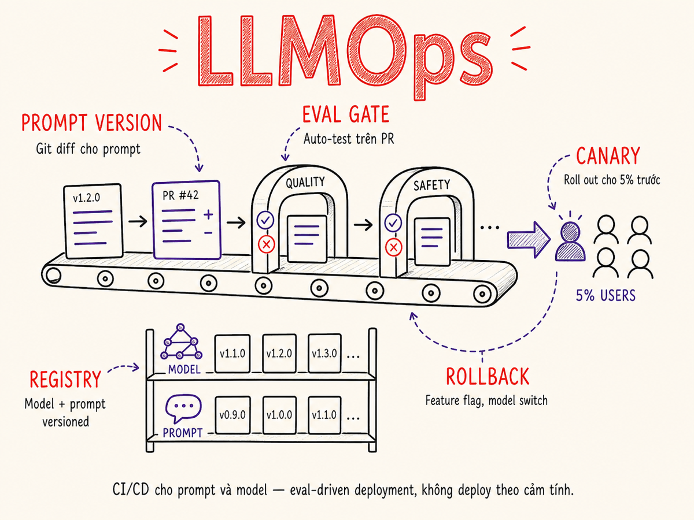

MLOps / LLMOps
Từ CI/CD cho prompts đến canary deployment, từ experiment tracking đến rollback — vận hành LLM features trong production đòi hỏi một discipline riêng vượt ra ngoài MLOps truyền thống.

19.1 LLMOps khác MLOps thế nào
MLOps truyền thống xoay quanh training pipeline: thu thập data, label, train, evaluate, deploy model. Vòng lặp chủ yếu là data → model → serving. Khi model hoạt động tốt, bạn có thể để nó chạy khá ổn định cho đến khi cần retrain.
LLMOps xuất hiện vì foundation models thay đổi cách chúng ta build AI applications.
Trong hầu hết dự án LLM, bạn không tự train model — bạn dùng API của OpenAI, Anthropic,
Google, hoặc một open-source model. Kết quả là vòng lặp thay đổi hoàn toàn: từ
data → train → deploy sang prompt → eval → ship → observe → iterate.
| Chiều cạnh | MLOps truyền thống | LLMOps |
|---|---|---|
| Artifact chính cần version | Model weights, training code | Prompts, eval sets, routing config |
| Vòng lặp iteration | Ngày đến tuần (training) | Phút đến giờ (prompt edit) |
| Evaluation | Metrics cố định (accuracy, F1) | LLM-as-judge, human eval, regression sets |
| Deployment unit | Model binary/container | Prompt version + model version + config |
| Drift detection | Data drift, model drift | Output quality drift, latency drift, cost drift |
| Rollback | Swap model version | Swap prompt version, model version, hoặc feature flag |
| Tooling trưởng thành | MLflow, Kubeflow, SageMaker | Braintrust, Langfuse (acq. ClickHouse 2026), LangSmith — đang trưởng thành nhanh |
LLMOps không thay thế MLOps — nó là một specialization dành cho ứng dụng dùng foundation models. Nếu bạn fine-tune model, bạn vẫn cần MLOps cho training pipeline; LLMOps phủ thêm lớp prompt/eval lifecycle bên trên.
Tại sao phức tạp hơn tưởng?
Nhiều team bắt đầu bằng cách hardcode prompt trực tiếp trong code. Khi prompt được "tuned" bởi nhiều người qua nhiều tháng, không ai biết version nào đang chạy ở đâu, kết quả thay đổi theo kiểu nào, và khi có regression thì prompt nào gây ra. LLMOps là câu trả lời tổ chức cho bài toán này.
19.2 CI/CD cho Prompts
Prompt as code là nguyên tắc trung tâm: mọi prompt — system prompt, few-shot examples, instruction template — đều được treat như source code. Điều này có nghĩa:
- Version control: Prompts sống trong Git repository, có commit history, blame, tags
- Code review: Thay đổi prompt đi qua Pull Request, reviewer có thể comment từng dòng
- Automated testing: Mỗi PR trigger chạy eval suite để phát hiện regression
- Audit trail: Biết ai thay đổi gì, khi nào, vì lý do gì
Cấu trúc thư mục prompt điển hình
prompts/
summarization/
v2.1.0/
system.txt # system prompt
few-shot.jsonl # few-shot examples
config.json # model, temperature, max_tokens
v2.0.0/ # previous version, retained
extraction/
v1.3.0/
system.txt
...
evals/
summarization/
golden-set.jsonl # input + expected output
eval-config.json # grader, thresholdPrompt template language
Các công cụ như Jinja2, Handlebars, hoặc custom DSL giúp inject context vào prompt mà không làm rối plain text. Một số team dùng YAML front-matter để mô tả metadata (author, version, target-model) trước phần prompt content.
Treat prompt files như bạn treat database migrations: mỗi thay đổi là một version mới, không edit in-place. Điều này cho phép rollback tức thời mà không cần redeploy code.
19.3 Experiment Tracking
Experiment tracking trong LLMOps theo dõi mọi thứ liên quan đến một "run": prompt version, model version, temperature, eval results, latency, cost. Khi bạn chạy 50 biến thể prompt khác nhau, bạn cần hệ thống để so sánh chúng một cách có hệ thống.
Các dimension cần track
- Inputs: Prompt version ID, model name + version, hyperparams (temperature, top-p, max_tokens)
- Outputs: Response text, latency (TTFT, TBT, total), token counts (input/output/cached)
- Eval scores: Per-metric scores (accuracy, faithfulness, coherence), overall pass rate
- Cost: Total cost per run, cost per test case
- Metadata: Git commit SHA, timestamp, environment, author
Regression detection
Regression xảy ra khi một thay đổi (prompt, model upgrade, context modification) làm giảm chất lượng trên một subset test cases. Để phát hiện:
- Duy trì baseline run cho mỗi major version — kết quả của version đang production
- So sánh mỗi PR run với baseline: nếu score giảm quá X%, flag regression
- Chú ý per-category regression — overall score có thể ổn nhưng một loại input cụ thể tệ hơn
- Dùng statistical significance nếu eval set nhỏ để tránh false positive
Khi provider release model version mới (ví dụ GPT-4o-mini → GPT-4o-mini-2025), hành vi thường thay đổi. Luôn chạy full eval trước khi migrate production traffic sang model version mới, ngay cả khi provider tuyên bố "backward compatible".
19.4 Model Registry & Artifact Storage
Nếu bạn fine-tune model, bạn cần nơi lưu và quản lý model artifacts. Ngay cả với API-only workflow, bạn vẫn cần track: model versions đang dùng, khi nào switch, performance của từng version.
Các lựa chọn phổ biến
- Hugging Face Hub: Nơi host và share model weights. Private repos cho internal fine-tuned models. Model cards document training details, intended use, limitations.
- MLflow Model Registry: Stage-based workflow (Staging → Production → Archived). Tích hợp với experiment tracking. Self-hosted hoặc managed (Databricks).
- Weights & Biases Artifacts: Lưu model checkpoints, datasets, eval results với versioning và lineage tracking.
-
Custom S3/GCS: Đơn giản nhất — lưu artifacts theo path convention
s3://models/{name}/{version}/. Dễ dùng nhưng thiếu UI và query.
Model Card best practices
Mỗi model (kể cả fine-tuned variant) nên có model card documenting: training data, intended use cases, known limitations, evaluation results, và người chịu trách nhiệm. Model card giúp tránh "ai cũng dùng model nhưng không ai biết nó được train trên data gì."
19.5 Eval-driven CI
Eval-driven CI là thực hành chạy automated evaluation trên mỗi Pull Request và dùng kết quả để gate merge. Đây là cột sống của LLMOps — không có nó, bạn không biết liệu thay đổi của mình có cải thiện hay làm tệ hơn behavior của hệ thống.
Thiết lập pipeline
- Eval set: Một tập test cases cố định với input và expected behavior. Ít nhất 50–200 cases để có statistical reliability. Có golden set (cases quan trọng nhất, không bao giờ được fail) và regression set (cases từng có vấn đề).
- Grader: Cơ chế chấm điểm mỗi output. Có thể là exact match, regex, LLM-as-judge (dùng model khác chấm điểm), hoặc custom code.
- Threshold: Điểm tối thiểu cần đạt. Ví dụ: ≥90% pass rate overall, 100% pass rate trên golden set.
- CI integration: GitHub Actions/GitLab CI chạy eval, post comment với kết quả, block merge nếu fail.
Chi phí eval trong CI
Chạy eval trên mỗi PR có thể tốn kém nếu dùng expensive models. Chiến lược giảm cost:
- Dùng cheaper model cho grading (không nhất thiết phải dùng model tốt nhất)
- Chạy fast eval set nhỏ hơn trên PR; full eval chỉ chạy trước merge vào main
- Dùng caching cho responses giống nhau (same prompt + same input)
- Batch API (50% cheaper) cho eval pipeline không cần real-time
- GitHub
gh models eval(ra mắt 2025): lệnh CLI native chạy eval prompt trực tiếp trong GitHub Actions với built-in evaluators (string match, similarity, LLM-as-judge)
19.6 Canary, Shadow, A/B Deployment
Deploy LLM features an toàn hơn bằng cách không đẩy thay đổi lên 100% traffic ngay lập tức. Ba strategies phổ biến:
Canary Deployment
Đưa version mới cho một tỉ lệ nhỏ traffic (ví dụ 5%), monitor metrics, rồi tăng dần (5% → 20% → 50% → 100%) nếu mọi thứ ổn. Nếu có vấn đề, rollback chỉ ảnh hưởng nhóm nhỏ.
Metrics cần monitor trong canary: latency, error rate, user satisfaction scores (thumbs up/down), cost per request, output length distribution.
Phù hợp khi: thay đổi prompt lớn, upgrade model version, thay đổi RAG pipeline
Shadow Deployment
Chạy version mới song song với production: user thấy kết quả từ production, nhưng request cũng được gửi tới version mới để so sánh. Không có rủi ro user impact — chỉ dùng để validate trước khi switch.
Shadow mode tốn gấp đôi cost vì phải call model hai lần. Nhưng rất an toàn để validate behavior của version mới trên real traffic patterns.
Phù hợp khi: thay đổi rủi ro cao, migration sang model hoàn toàn khác
A/B Testing
Chia user thành nhóm A và B, mỗi nhóm dùng một variant khác nhau. Đo kết quả theo business metrics thực sự (task completion, user engagement, churn). Phân tích sau một thời gian đủ dài để có statistical significance.
Khác canary ở chỗ: A/B có mục đích học (variant nào tốt hơn?) còn canary có mục đích an toàn (rollout không gây sự cố).
Lưu ý non-determinism: LLM tạo output xác suất — cùng input có thể cho kết quả khác nhau mỗi lần. Nghiên cứu 2024–2025 đo được độ biến động accuracy lên đến 15% giữa các lần chạy. Vì vậy A/B cho LLM cần chạy đủ lâu với sample size đủ lớn; dùng average-over-N-runs thay vì single-shot để so sánh.
Phù hợp khi: so sánh hai hướng thiết kế khác nhau, validate product hypothesis
19.7 Rollback Strategies
Khi phát hiện vấn đề (regression, cost spike, latency tăng, output quality giảm), cần rollback nhanh. LLMOps có nhiều "knobs" để rollback:
Implement rollback infrastructure
Để rollback thực sự nhanh (dưới 5 phút), cần chuẩn bị sẵn:
- Feature flags: LaunchDarkly, Unleash, hoặc custom — toggle features không cần deploy
- Prompt routing config: File hoặc DB record quy định "prompt X version Y cho endpoint Z" — thay đổi config là switch prompt ngay
- Model routing config: Tương tự — quy định "model A cho task X, model B cho task Y"
- Monitoring alerts: Phát hiện vấn đề tự động trước khi user report
19.8 Dataset Versioning
Datasets trong LLMOps có nhiều loại, mỗi loại cần chiến lược versioning riêng:
| Dataset type | Mô tả | Versioning approach |
|---|---|---|
| Training data | Data dùng để fine-tune model | DVC, Weights & Biases Artifacts, S3 với date prefix |
| Eval set | Test cases dùng trong CI eval pipeline | Git (nếu nhỏ), DVC hoặc Git LFS (nếu lớn) |
| Golden set | Curated cases must-never-fail, thường từ real bugs | Git, strict review trước khi thay đổi |
| Preference data | Human feedback (A vs B) cho RLHF/DPO | Dedicated DB hoặc JSONL với metadata |
| Production logs | Real inputs từ production để mine new test cases | Append-only log storage (S3, BigQuery) |
DVC — Data Version Control
DVC (dvc.org) là tool phổ biến nhất cho data versioning. Hoạt động như Git nhưng cho data:
lưu metadata trong Git, actual data trong remote storage (S3, GCS). Lệnh
dvc pull để download data, dvc push để upload.
Mining production logs để thêm test cases là chiến lược rất hiệu quả: khi user gặp edge case mới, thêm nó vào golden set. Theo thời gian, eval set của bạn cover nhiều real-world scenarios hơn bất kỳ tập synthetic nào.
Năm 2025–2026, RAGOps nổi lên như một sub-discipline riêng: versioning vector index, CI/CD quality gate cho retrieval pipeline, streaming re-indexing (giữ embedding tươi trong vài giây thay vì batch hàng giờ), và schema drift detection khi metadata thay đổi. Treat vector index như production data pipeline — cần versioning, rebuild workflow, và monitoring riêng.
19.9 Tooling: Eval, Observability & LLM Gateway
Ecosystem LLMOps tooling đang phát triển nhanh. Dưới đây là các công cụ chính:
| Tool | Loại | Điểm mạnh | Hạn chế |
|---|---|---|---|
| Braintrust | Eval + tracing | Eval framework mạnh, score comparison, CI integration, dataset management | Paid product, vendor lock-in |
| Langfuse | Observability + eval | Open-source, self-hostable, tracing chi tiết, datasets, SDK cho nhiều ngôn ngữ; được ClickHouse mua lại tháng 1/2026 — tiếp tục phát triển độc lập | Eval capabilities ít hơn Braintrust |
| LangSmith | Tracing + eval | Tight integration với LangChain, UI debug traces dễ dùng | Phụ thuộc hệ sinh thái LangChain, pricing |
| PromptLayer | Prompt management | Prompt versioning, A/B testing built-in, non-technical friendly UI; điểm đến migration chính từ Humanloop (đã đóng cửa tháng 9/2025) | Ít eval capability hơn |
| Helicone | Observability + caching | Proxy-based (zero code change), semantic caching, rate limiting, cost tracking | Proxy thêm latency nhỏ |
| LiteLLM | LLM gateway (OSS) | Unified OpenAI-compatible API cho 100+ provider, self-host, load balancing, fallback, cost tracking | Cần tự vận hành; UI quản lý còn đang phát triển |
| Portkey | LLM gateway | Guardrails, PII redaction, prompt versioning, audit trail; open-source (Apache 2.0) từ tháng 3/2026 | Managed tier tính phí; tính năng bảo mật cần cấu hình kỹ |
| OpenRouter | LLM gateway (marketplace) | 300+ model từ 60+ provider qua một API, không cần tự host, phù hợp thử nghiệm nhanh | Markup 5% trên mọi request; vendor lock-in với OpenRouter |
| MLflow | Experiment tracking | Mature, open-source, model registry, có LLM extensions | LLM-specific features còn đang phát triển |
| Weights & Biases | Experiment tracking | Excellent UI, artifact versioning, team collaboration | Expensive at scale, less LLM-native |
Lựa chọn tooling
Không có "best tool" — phụ thuộc vào use case:
- Nếu ưu tiên eval & CI integration: Braintrust hoặc LangSmith
- Nếu ưu tiên self-host + open source: Langfuse
- Nếu cần observability với zero code change: Helicone
- Nếu đang dùng LangChain/LangGraph: LangSmith tích hợp tự nhiên nhất
- Nếu cần prompt management cho non-engineers: PromptLayer (Humanloop đã đóng cửa tháng 9/2025, migration guide có sẵn)
- Nếu cần LLM gateway tự host: LiteLLM (OSS, hỗ trợ 100+ provider)
- Nếu cần guardrails + audit trail ở gateway layer: Portkey (open-source từ tháng 3/2026)
- Nếu cần thử nghiệm nhiều model nhanh: OpenRouter (300+ model, không cần self-host)
19.10 Org Practices: Ai Owns Prompts?
Câu hỏi "ai sở hữu prompts" là câu hỏi tổ chức quan trọng hơn vẻ ngoài của nó. Prompts là giao điểm của engineering (implementation, testing, deployment), product (tone, behavior, user experience), và domain expertise (accuracy, compliance).
Ba model tổ chức
Engineers sở hữu và maintain prompts như code. Thay đổi đi qua PR process. Product team request changes qua tickets.
Pro: Consistency, testability, version control tốt
Con: Chậm iteration vì phải qua engineer, product team mất autonomy
Tốt cho: hệ thống critical, regulated industries, teams nhỏ
Product/content team có thể edit prompts trực tiếp qua tool như PromptLayer. Engineers chỉ setup infrastructure.
Pro: Nhanh, product team autonomy cao
Con: Khó đảm bảo quality, có thể break things không có test
Tốt cho: marketing copy, content features ít critical
Hybrid: Product team draft và review prompts trong UI, nhưng changes phải pass automated eval và được engineer approve trước khi deploy.
Pro: Balance giữa tốc độ và safety
Con: Phức tạp về process, cần tooling tốt
Tốt cho: teams lớn với nhiều features, mature LLMOps setup
Checklist LLMOps maturity
- ☐ Prompts được version-controlled trong Git
- ☐ Có eval set với ≥50 test cases
- ☐ CI chạy eval trên mỗi PR
- ☐ Có metrics dashboard (latency, cost, quality score)
- ☐ Có feature flags cho LLM features
- ☐ Rollback procedure documented và tested
- ☐ Canary deployment cho major changes
- ☐ Ownership và on-call rõ ràng
Tóm tắt
- LLMOps focus vào prompt/eval lifecycle thay vì training pipeline — vòng lặp iteration từ tuần xuống còn phút.
- Prompt as code: version control, code review, automated testing là nền tảng.
- Eval-driven CI là cột sống — chạy eval trên mỗi PR, gate merge trên score threshold.
- Canary + feature flags cho phép deploy an toàn và rollback nhanh mà không cần redeploy code.
- Tooling ecosystem đang trưởng thành nhanh: Braintrust, Langfuse (acq. ClickHouse), LangSmith cạnh tranh trong eval/observability; LiteLLM và Portkey (OSS từ 3/2026) nổi lên ở lớp LLM gateway; Humanloop đã đóng cửa tháng 9/2025.
- Ownership của prompts cần được define rõ ràng — shared model thường hiệu quả nhất cho teams trưởng thành.